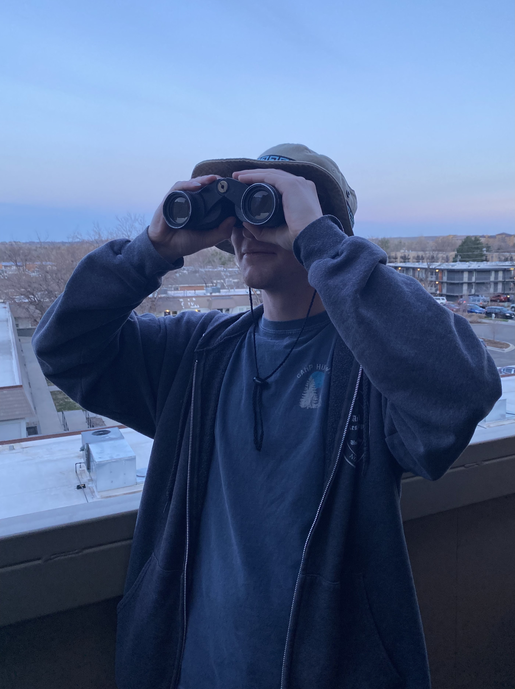

About Me
Above all, I'm a musician. My heart belongs to the nylon-string guitar, but I'm well versed in the language of music. I have experience in trombone, tenor saxophone, piano, electric guitar, bağlama, and ocarina. I arrange music for accordion and guitar, and I have some experience with electronic music production. My musical endeavors consume most of my free time. Additionally, I'm an ardent nature lover. I'm intoxicated by the presence of blue skies and fresh air. I just love appreciating beauty of any kind whenever and wherever I can find it.
